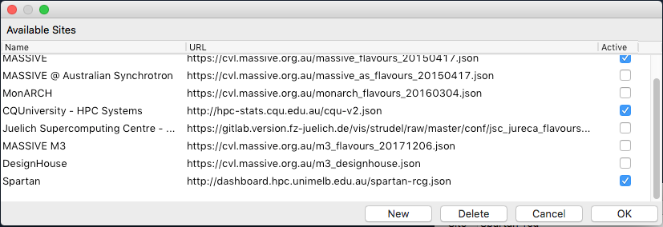
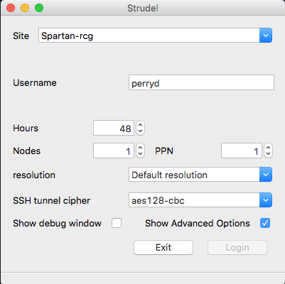
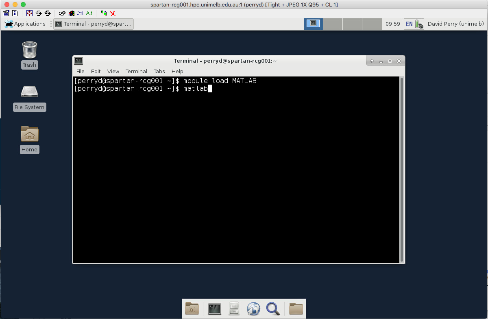
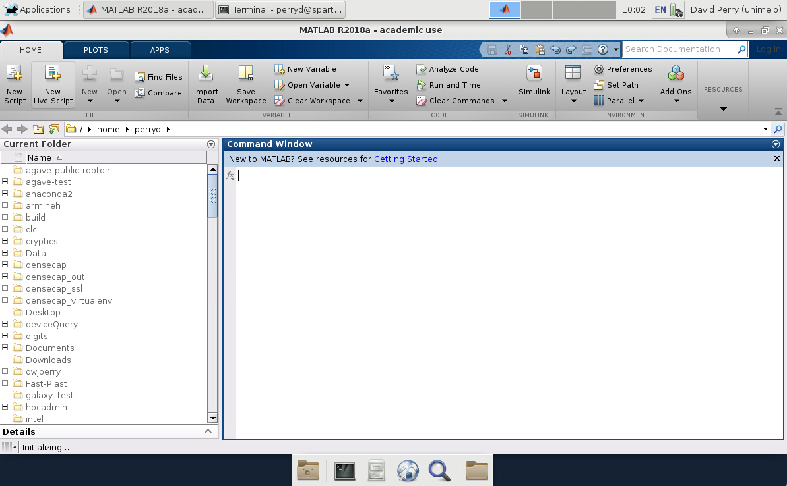

Beta Note that Spartan Desktop is currently in beta, and is not yet ready for general use. You're welcome to give it a try and provide feedback, but there may be bugs or missing features.
While HPC systems like Spartan are oriented to command line batch processing, certain applications benefit from access to an interactive desktop environment. For example, you might like to quickly view some intermediate data, without having to download it to your own computer, and taking advantage of software already installed on Spartan.
Spartan Desktop is based on Strudel, a cross-platform application developed by CVL/MASSIVE. It will create an interactive job on Spartan, launch a desktop session, and connect you via a secure SSH tunnel using TurboVNC.
Getting Started
- Install TurboVNC and Strudel as per the instructions at https://www.massive.org.au/userguide/cluster-instructions/strudel
-
Add Spartan as a site to Strudel. Go to 'File -> Manage Sites', and click 'New'. Set the name field as
Spartan Desktopand URL ashttp://dashboard.hpc.unimelb.edu.au/spartan-rcg.json. Click Ok, and make sure the site is set as active.
-
Now to connect... select
spartan-rcgfrom the site menu, and enter your Spartan username. Enable the advanced options, and set the SSH tunnel cipher asaes128-cbc.
-
Click Login. Strudel will ask for your Spartan password, start a desktop session, and connect to it via TurboVNC.
Usage
From your desktop session, you can load modules and start jobs just as you would from a command line session. For example, to start MATLAB:

